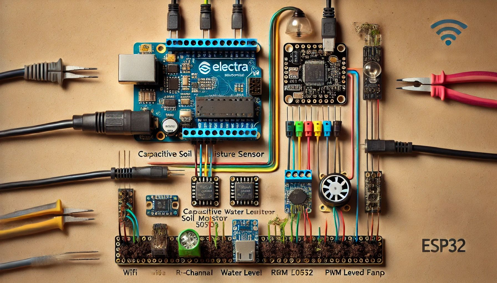

ברוכים הבאים למערכת השקייה IoT
פרויקט ייחודי המשלב טכנולוגיה חכמה לחיסכון במים וניהול השקיה מתקדם.

לחות : --
מים: --
LDR: --
פרויקט ייחודי המשלב טכנולוגיה חכמה לחיסכון במים וניהול השקיה מתקדם.
לחות : --
מים: --
LDR: --